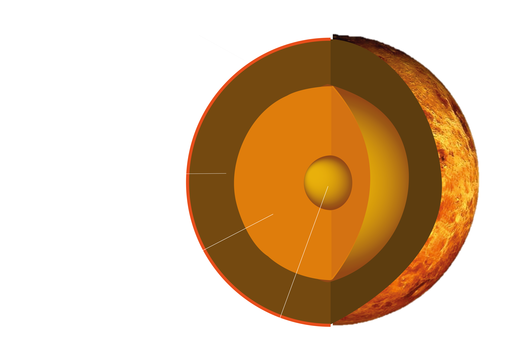
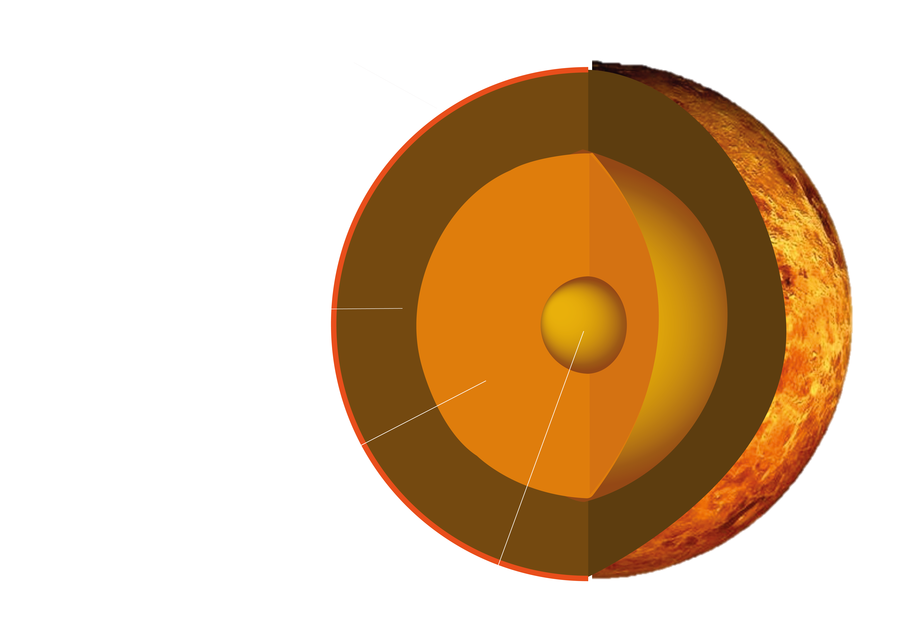

What would it be to live on a different planet?
VENUS


 

| EQUATORIAL DIAMETER | 12 104 km |
|---|---|
| ROTATION PERIOD | 243 days |
| SOLAR ORBIT PERIOD | 225 days |
| SURFACE TEMPERATURE | 462 C |
| DIST. FROM SUN | 108 M km |
| SURFACE GRAVITY | 8.9 m/s |
Hostile red-orange planet, that is shredded with volcanic rivers, thousands of volcanoes and temperatures that melts led instantly.
Wind speeds in upper atmosphere reaching 400 km/h, but in lover atmosphere mere 3 km/h.
Ravaged by constant greenhouse effect, heating planet up to 465 Celsius. It would not be wrong to call it Solar Systems Hell.
Is it possible to live on Venus? Well, no. At least not now. For us as human beings, not only the temperature or simple lack of Oxygen are opposing us. The terrain is quite flat, well if you are not near a volcano. Not pleasant to walk on, that is if you could survive long enough to touch the ground. If you get lucky enough to get through 400 km/h winds in upper atmosphere, resisted the heat and survived lava rivers that’s almost 5000 km long, then the pressure will kill you.
In comparison on Earth's sea level we are enjoying pleasant 1 bar of pressure. On Venus it would be 92 bars, that’s the same pressure as being 914 m down in the deep blue sea. As a human, you can breathe normal air only till 9 bars of pressure, so tough luck. Not only that, but air is so heavy there, that every movement would have friction, that would feel much like being in water, so moving is a hard work there.
In many aspects Venus is much like Earth, gravitation is almost the same and size is almost the same, except that you would have long days and long nights. 1 day would be 117 Earth days. That gives a whole lot different meaning to “all nighters”!